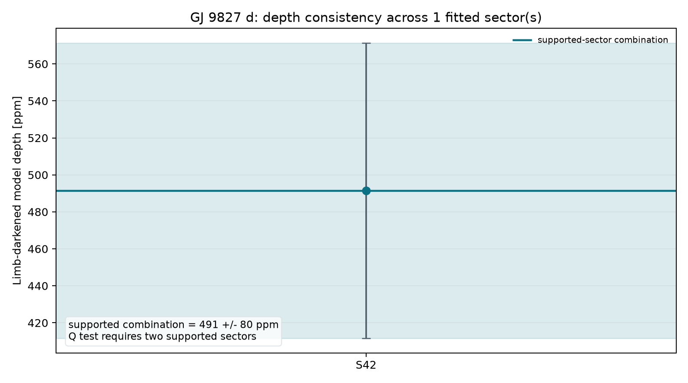
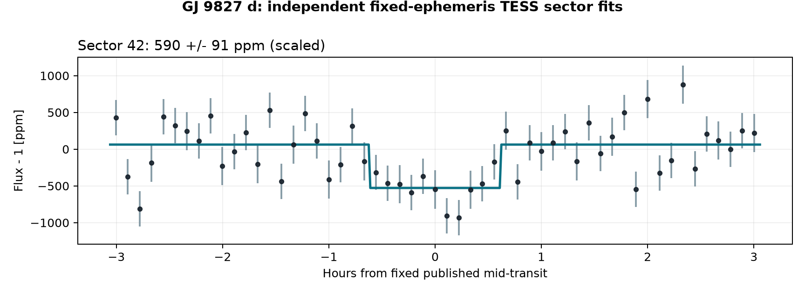

Data source notes
SHA-256, LF-normalised text
c600704917773e0d8368fff2a06e1d772521e19ab52a5cff2c9327c1bd605b70Browse 11 versioned evidence files. Table previews simply display stored rows. Consult the project report for the source, processing steps, and inference assumptions.


c600704917773e0d8368fff2a06e1d772521e19ab52a5cff2c9327c1bd605b70| pl_name | hostname | ra | dec | pl_orbper | pl_tranmid | pl_trandur |
|---|---|---|---|---|---|---|
| GJ 9827 d | GJ 9827 | 351.7717763 | -1.2853435 | 6.20183 | 2460265.10196 | 1.2264 |
406c2613af375e07f2ff646de792c7da9ddc7e0cb7ec1fc22216b5a10eff65b79708ef48f7e7d41fe4c56fbe7c82c5b44d816fd64a1ea1d55e772981202597d6fdb998982d3094d58400ffb7c26665bba38ae4c4078f5c5643905d42fc405fa09753d4e867c9311112ad962beb1934c186fe8e247e1689bd52557956ffc10efa| quantity | value | unit |
|---|---|---|
| sector | 42 | TESS sector |
| period_days | 6.20183 | days; NASA Exoplanet Archive |
| published_duration_hours | 1.2264 | hours; NASA Exoplanet Archive |
| a_over_rstar | 19.6494758621 | fixed from saved a and stellar radius |
8689123ad0b74d7be5a9b49caea22694ee72435d6b9bbb552fdbe688eec424c7| sector | filename | transit_events | n_points | transit_supported | delta_bic | timing_shift_hours |
|---|---|---|---|---|---|---|
| 42 | tess2021232031932-s0042-0000000301289516-0213-s_lc.fits | 2 | 442 | True | 28.17653933 | 0.03189759957 |
| 70 | tess2023263165758-s0070-0000000301289516-0265-s_lc.fits | 4 | 867 | True | 148.1863052 | -0.0393894869 |
| 92 | tess2025127075000-s0092-0000000301289516-0289-s_lc.fits | 4 | 761 | True | 75.36597994 | -0.3065568489 |
82d731dd2665c210a408798839985a7f147a7d362e8fefc43b97587b142377dac66105e85901f494ebbaa69a7a0203ab4485c070de6e553cc0fe609f5abf05e67fa0c14905142d5003166faee2979841f7f8603a63d4f51e2489c588aa30c0994da81f4b305c576bcaec0161e053e2a416e7c1f4a53887f65cd45455d10fc771c8634dbfc4fe88aed9535e9374cf8469fdeeb32bfdae696cd556b5ac02d69b74SHA-256 values verify the stored files. They do not independently validate the scientific analysis. Rebuild this page with python scripts/evidence_catalog.py followed by python scripts/render_evidence_page.py.